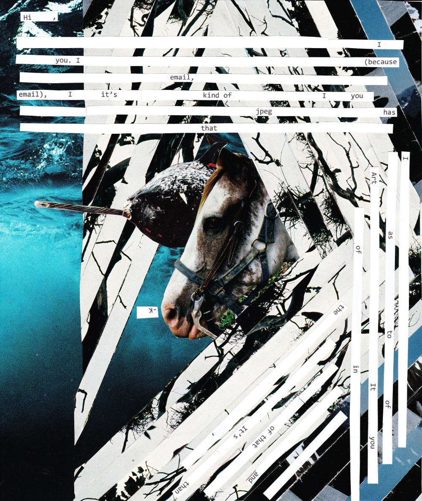
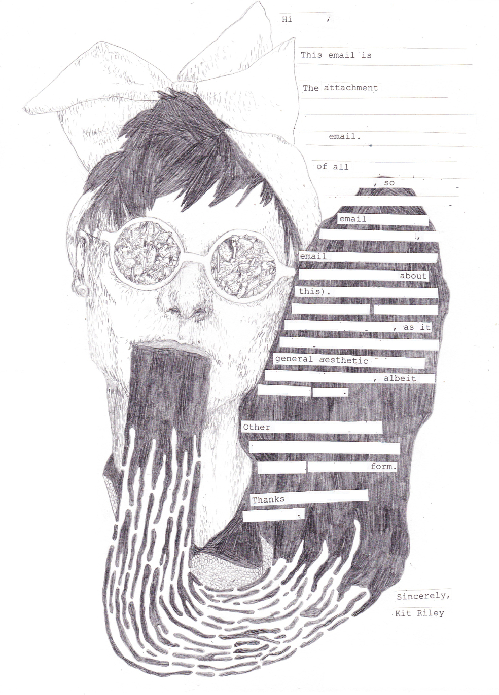
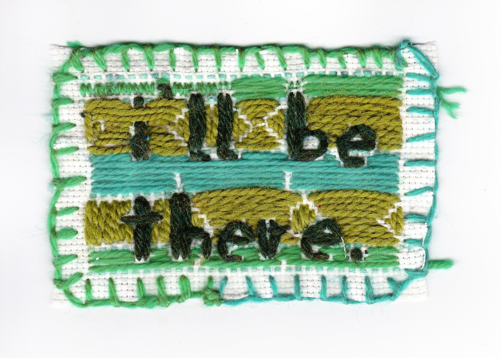
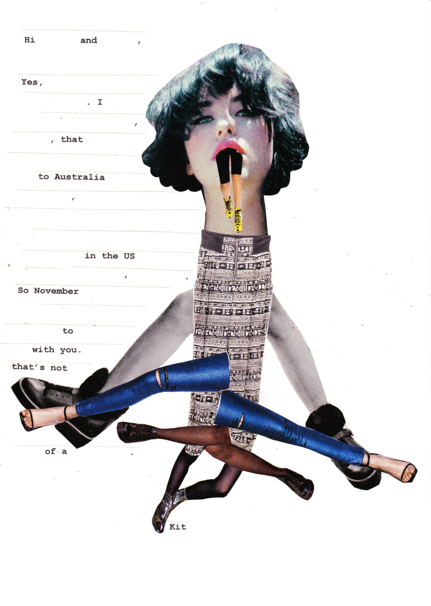
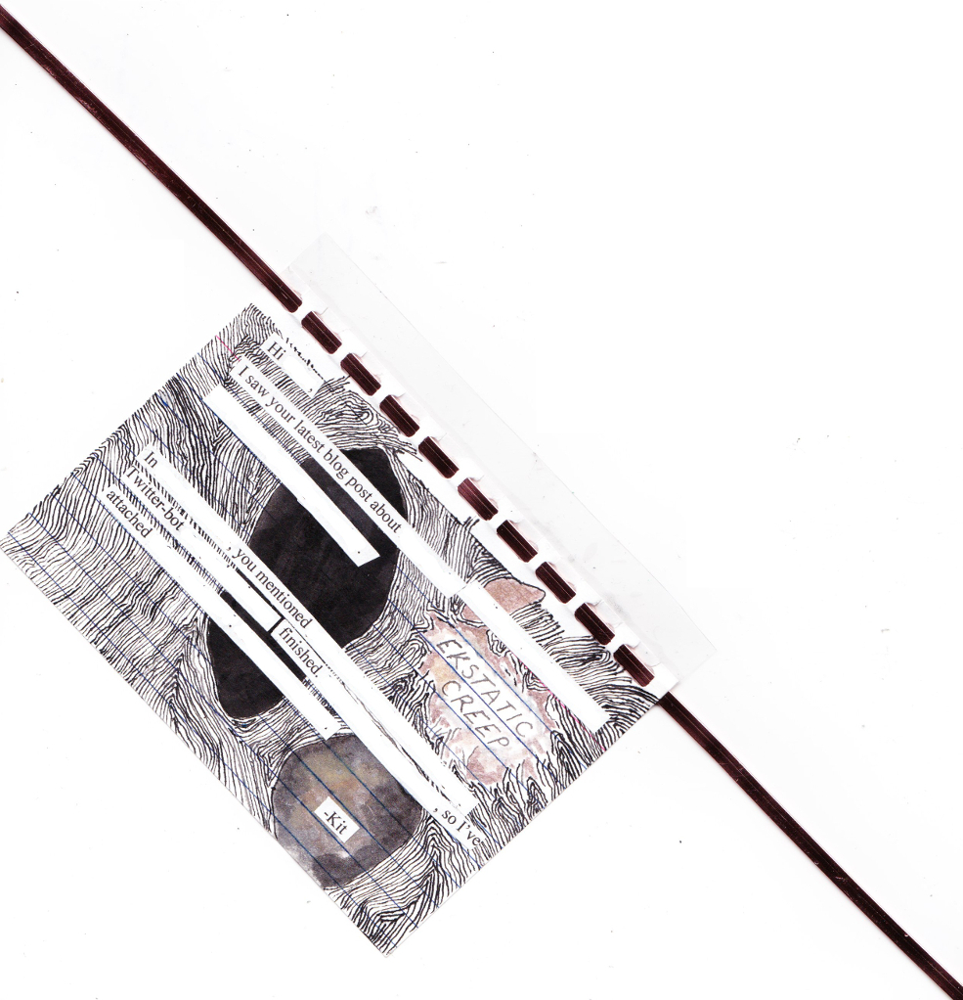
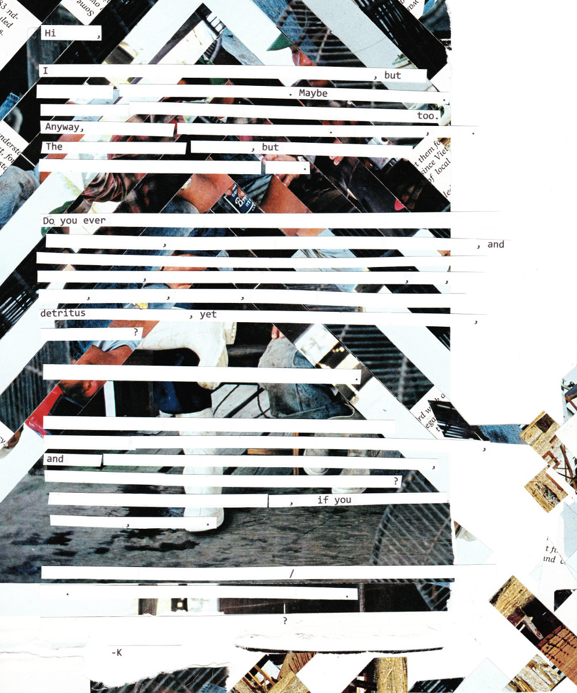
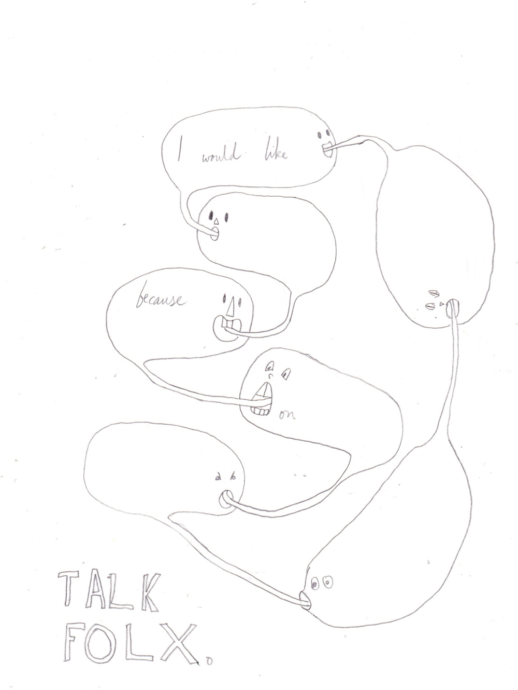
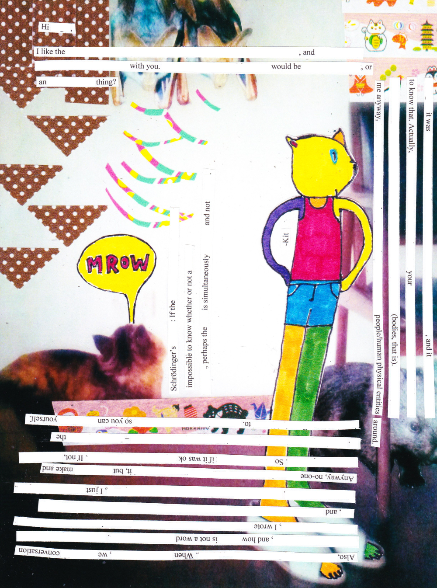

Illuminated Emails
Between January and October 2015, I made illuminated versions of my emails, and sent them to people as attachments to the ordinary plain text messages. Here are some examples, with identifying details redacted.







